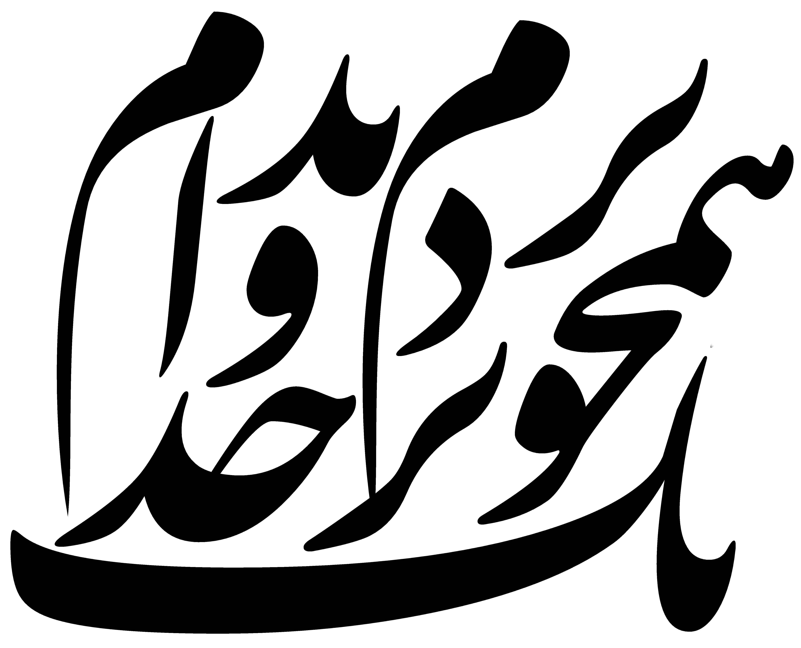
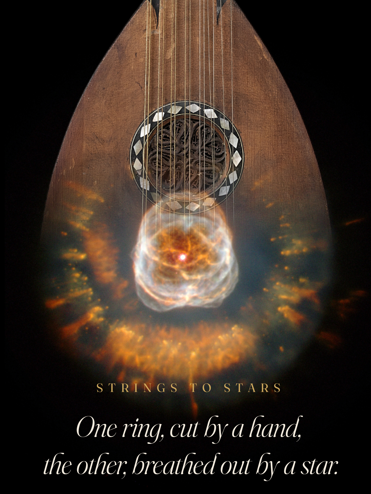

Experimental validation of Helmholtz resonator arrays as zero-energy acoustic treatment for net-zero energy buildings
Next Research (Elsevier) · 2026 · Karbasbaf, M.M., Ezaan, G.
Independent Researcher, Luthier & Book Designer
Resonance phenomena across terrestrial scales — from the soundhole of a Persian lute to the ornamented dome of a palace hall — read as a single, continuous instrument.

Selected Covers
Book Design
Calligraphy
Typographic Plates
Five plates, arranged as the Fibonacci square spiral itself — the same 1, 1, 2, 3, 5 construction used in the Golden Method (2017) to place a lute's soundhole. Select a cover to inspect it at full scale.
The Researcher
Luthier
Calligrapher
Researcher

Years of hands-on work with musical instruments — investigating, building, and preserving them — led to the creation of the Golden Method, a mathematical approach for optimizing soundhole design. This practical experience revealed the deep acoustic wisdom embedded in centuries-old craftsmanship, providing the experiential foundation for all subsequent scientific research.
Research later expanded into Persian architectural heritage, where related wave-analysis principles were shown to operate — through different physical mechanisms and at different frequency ranges — within ornamental elements long assumed to be purely decorative. Current work asks whether the same analytical language can be extended toward electromagnetic and plasma wave phenomena in astrophysical environments.
Read the full narrative →Working Principle
The universe is not a die, but a dulcimer. M. M. Karbasbaf
Selected Record
Next Research (Elsevier) · 2026 · Karbasbaf, M.M., Ezaan, G.
Digital Applications in Archaeology and Cultural Heritage (Elsevier) · 2025 · Karbasbaf, M.M., Ezaan, G.
Applied Acoustics (Elsevier) · 2024 · Karbasbaf, M.M., Ezaan, G.
Arts · 2017 · Jafari, S., Karbasbaf, M.M.
Karbasbaf, M.M.
In Preparation